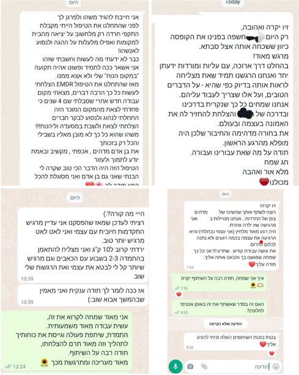

הדרכת הורים היא ליווי אישי שמחזק ביטחון, משפר תקשורת וגבולות בבית
מסייעת להתמודדות רגועה עם אתגרים רגשיים והתנהגותיים בדרך מעשית ומכילה
מיועד להורים החווים אתגרים עם ילדיהם, מתמודדים עם קשיי התנהגות
דינמיקות משפחתיות מורכבות או צורך בחיזוק הסמכות ההורית, ומעוניינים בכלים מעשיים ובתמיכה מקצועית
היא שיטת טיפול מוכחת לטראומה וחרדה, המבוססת על גירוי דו־צידי שמסייע לעבד זיכרונות תקועים
ולהפחית את עוצמתם, בתהליך בטוח ומובנה המבוצע ע״י מטפל מוסמך
מיועד לאנשים שחוו טראומה או אירועים מעוררי מצוקה, וכן למי שמתמודדים עם חרדה
או פלאשבקים או אף תחושת תקיעות רגשית, ומחפשים תהליך טיפולי ממוקד ואפקטיבי
דרמה-תרפיה היא טיפול רגשי יצירתי שמשלב פעולה, דמיון ופסיכולוגיה
מאפשר הבעה לא-מילולית, עיבוד חוויות ועקיפת מנגנוני הגנה בדרך בטוחה
מיועדת לכל מי שמחפש ליווי רגשי, ובמיוחד לאנשים המעוניינים לחזק את הביטחון והדימוי העצמי
לבטא רגשות בצורה חווייתית, ולפתח כלים להתמודדות רגשית דרך יצירה ותנועה
...לקוחות מספרים
| השכלה |
- תואר שני (M.A) בדרמה תרפיה - טיפול באמצעות אמנויות. - מטפלת מוסמכת מטעם מכללת תל-חי, התמחות בטראומה וניהול חרדה. - תואר ראשון (B.A) בהצטיינות בניהול משאבי אנוש ומדעי המדינה, אוניברסיטת בר-אילן. |
|---|---|
| הכשרות נוספות |
- "SEE FAR CBT" טראומה והחלמה בהנחיית פרופסור מולי להד. - טיפול בנפגעי תקיפה מינית בהנחיית ד"ר מאשה אלבוים. - פסיכודרמה בהנחיית עופר זילברברג. - פסיכותרפיה למתקדמים בהנחיית עומר לנס. - תעודת הצטיינות בהנחיית קבוצות דרמה לגיל השלישי מהמשרד לשוויון חברתי והמשרד לאזרחים ותיקים. - טיפול ב"ארגז חול" בהנחיית פרופסור ענת הלר. - פסיכולוגיה התפתחותית בהנחיית עומר לנס בסמינר הקיבוצים. - פסיכופיזיולוגיה בסמינר הקיבוצים. - פסיכופתולוגיה בסמינר הקיבוצים. - משחק מול מצלמה "טכניקה" בהנחיית ניב רז ואולי שטרנברג. |
| ניסיון תעסוקתי |
- הנחיית קבוצות דרמה תרפיה לנוער בכפוף למשרד החינוך. - הנחיית קבוצות דרמה תרפיה לגיל השלישי במרכזים שונים בארץ: "צוקר" תל אביב, "מרכז יום לקשיש" נהריה, "מרכז יום לקשיש" חצור הגלילית. - טיפול רגשי בדרמה תרפיה במרכז "משאבים" - טיפולים פרטניים וקבוצתיים, מתן כלים לילדים בהתמודדות עם חרדה וטראומה, הדרכת הורים. - מטפלת ב"מיזם מפגש" של "קרן רש"י" - עבודה טיפולית עם ילדים ונוער בסיכון באופן פרטני, באמצעים השלכתיים, תנועה ודרמה. - מפעילת חוגי דרמה והעצמה בבית ספר "אהבת ציון" תל אביב. |